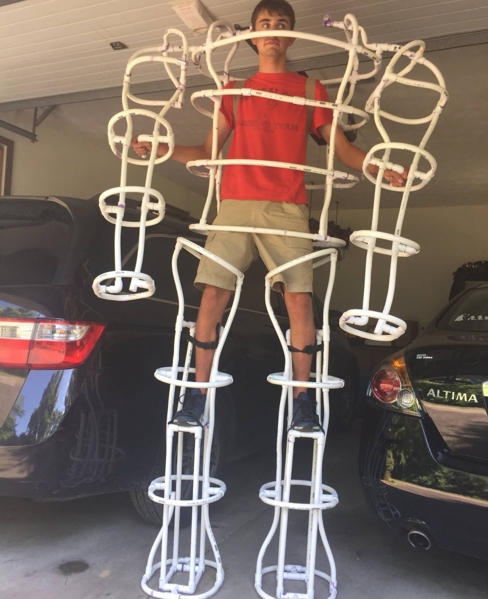
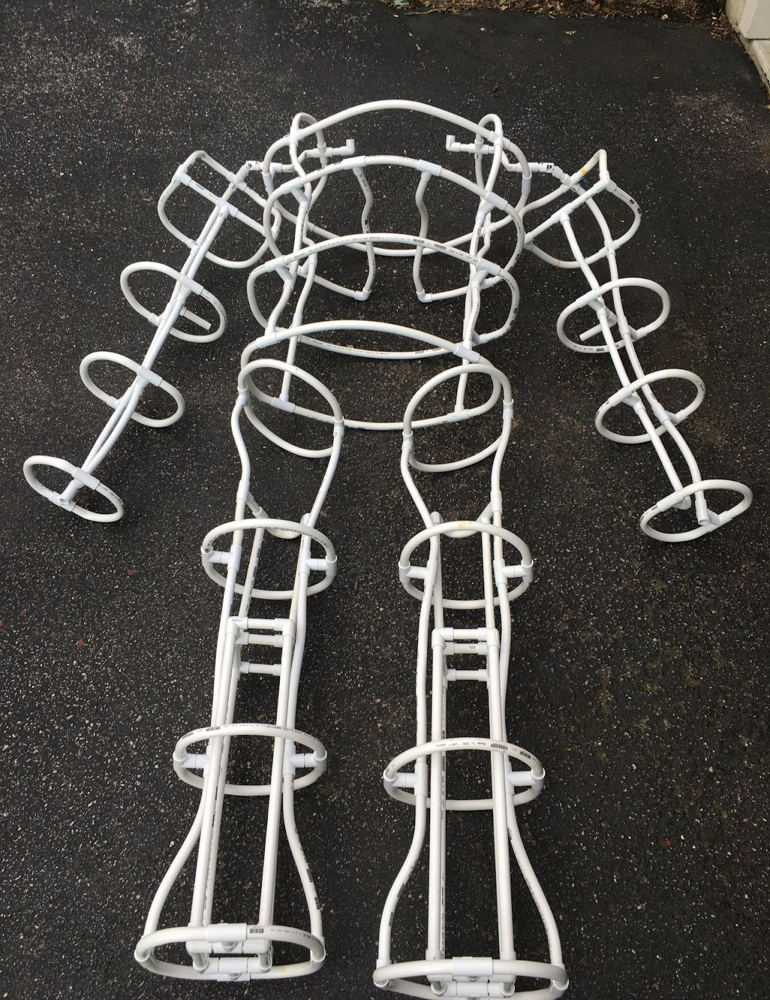
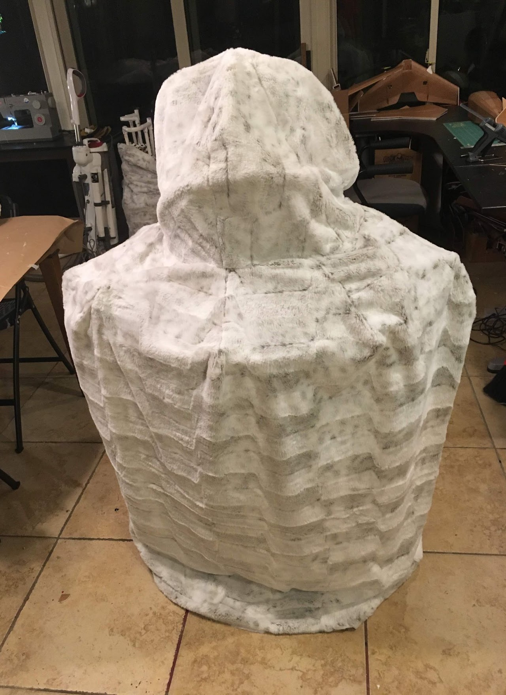
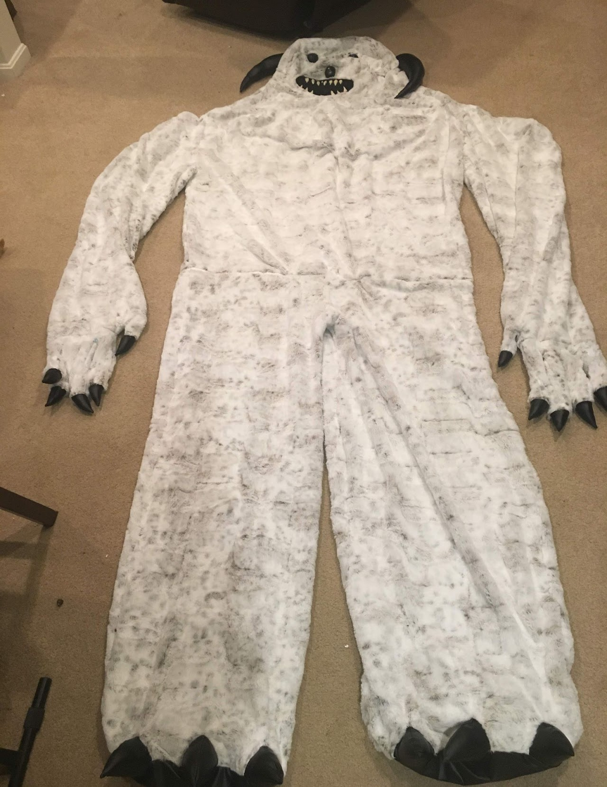
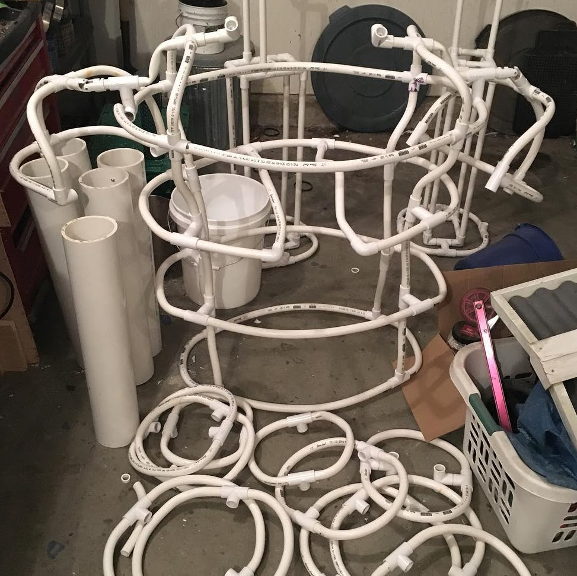
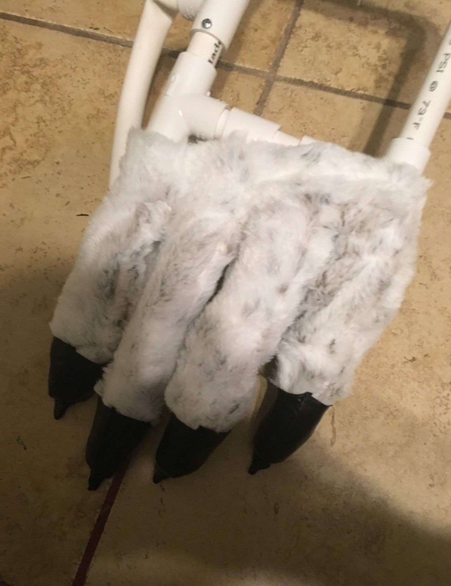
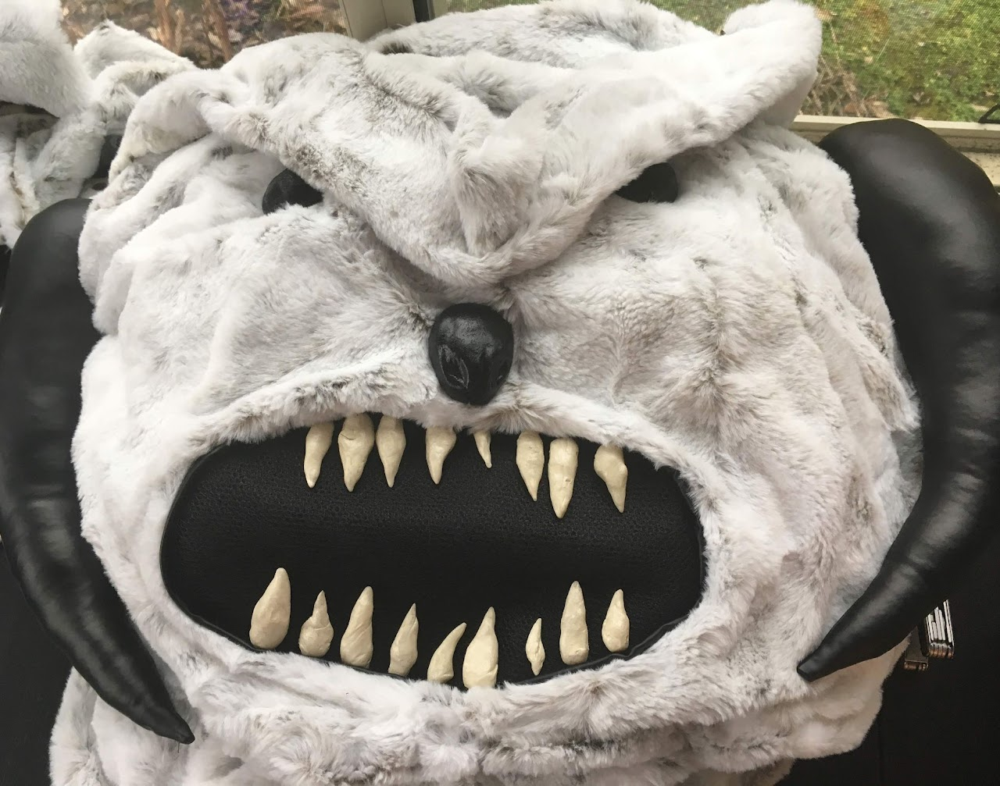

This project was my first real engineering experience. I wanted to
create an exoskeleton that would make me look like the Wampa from Star
Wars. I began by researching how something like this is typically made
and struggled to find any useful resources on the subject. Because of
this I ended up making design choices that were not optimal and if I
ever revisited this I would make different decisions. I began designing
and building the exoskeleton out of PVC piping. I chose PVC due to its
high strength and low cost. Still being in high school with a low paying
summer job really dictated some of the design choices I made. I used a
butane torch to heat up the PVC and bend it into place - I had to be
particularly careful here as burnt PVC releases toxic gas. Due to the
organic nature of this design, I had to bend and re-bend many pieces to
get them to fit properly.
The legs, arms and strap
mechanisms were the most difficult to make. For the shoulders, I created
a universal joint out of a carved piece of PVC fitting. This provided
all the motion I needed, but because of how my arms were positioned in
the suit I could not move the arms much anyway. The legs were an issue
because of the structural strength of PVC. I would not recommend
standing on a platform of PVC as it was constantly rickety and dangerous
to stand on. The backpack style of putting the torse and arms on meant
there was a lot of weight on my back which was uncomfortable and
impractical.
This project was unfinished for about a year
until the faux fur went on sale, at which point I sewed the skin
together and assembled the whole thing for the first time. This was a
difficult project that tested my abilities to make PVC do things for
which it was not designed.





